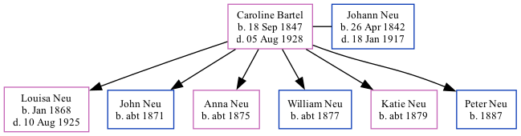

Caroline Eliza Neu (née Bartel) 1847 - 1928
[ Home ] | [ Surnames Index ] | [ Family History ]Caroline was the 3 times great-grandmother of Stephanie Hardesty (née Teten), was born in Indiana on Sep 18, 18471,2,3 and married Johann Neu (with whom she had 6 children: Louisa Juliana, John, Anna, William, Katie and Peter) in Spades, Ripley, Indiana, USA on Feb 19, 18672.
During her life, she was living in Precinct D, Seward, Nebraska, USA in 18801; in Seward, Seward, Nebraska in 19002; and in Seward Ward 1, Seward, Nebraska in 19103.
She died on Aug 5, 1928.
Children
- Louisa Juliana was born in Jan 1868
- John was born c. 1871
- Anna was born c. 1875
- William was born c. 1877
- Katie was born c. 1879
- Peter was born in 1887
Citations
- 1880 United States Federal Census Ancestry.com Operations Inc (Age: 33; Marital Status: Married; Relation to Head of House: Wife)
- 1900 United States Federal Census Ancestry.com Operations Inc (Age: 53; Marital Status: Married; Relation to Head of House: Wife)
- 1910 United States Federal Census Ancestry.com Operations Inc (Age in 1910: 63; Marital Status: Married; Relation to Head of House: Wife)
Family Tree
Data (GEDCOM) maintained by Jay Weston Hannah, Omaha, Nebraska, USA.
Website generated by ged2site. Last updated on Jun 18, 2024.